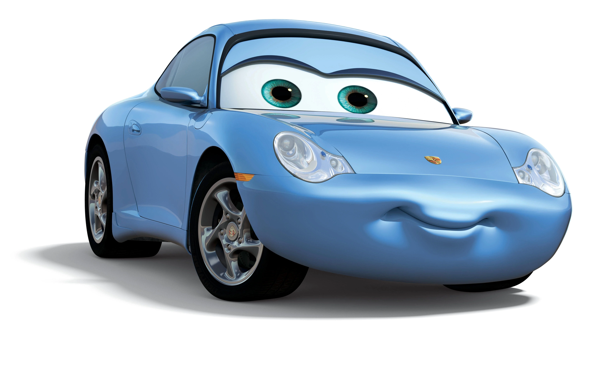

Sally
Sally Carrera , Arabalar'da ana karakter , Arabalar 2 ve Arabalar 3'te ise yardımcı karakterdir .
O mavi bir 2002 Porsche 911 Carrera. Cozy Cone Motel'in sahibidir ve Radiator Springs'in avukatıdır .
Aşkı , genellikle "Çıkartmalar" adını verdiği Şimşek McQueen'dir (farları olmadığı için; yalnızca farlara benzeyen çıkartmalar).
Geçmişinde Kaliforniyalı bir avukat olarak hızlı yaşamdan keyif almıyordu, bu yüzden Radiator Springs'e vardığında işleri yavaşlattı.
Süs Vadisi'nin manzarasına aşık olan ve edindiği yeni arkadaşlara derinden önem veren Sally, hayattan nasıl keyif alacağını biliyor.
Rahatlamanın en sevdiği yolu ana yol boyunca keyifli bir yolculuk yapmaktır.

Porsche
Filmdeki Sally Carrera'nın tasarımı, 2002 tarihli 911 modelinden ilham alınarak gerçekleştirilmişti.
Burada gördüğümüz güzellik, mevcut 911 Carrera GTS formunda karşımıza çıkıyor.
Güç, 477 beygir gücü ve 569 Nm tork üreten çift turbo 3.0 litrelik düz altılı motor sayesinde geliyor.
Special'da ayrıca yedi vitesli manuel şanzıman bulunuyor.